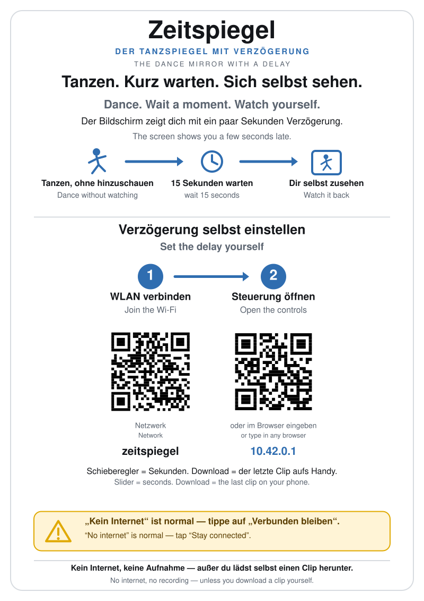

For dancers & students
Your studio has set up a Zeitspiegel — a mirror that shows you what you did a few seconds ago. Here's how to use it, and answers to the questions people ask most.
How to use it
- Look at the screen. The screen is the mirror. By default it shows you 15 seconds ago.
- Do your thing. Dance, lift, stretch, swing — without looking at the screen.
- A few seconds later, look up. You'll see what you just did, played back.
- Want a different delay, or want to save a clip?
Connect your phone to the Wi-Fi network called
zeitspiegel(no password) and openzeitspiegel.local.
The studio probably has this poster taped up next to the mirror:

Frequently asked questions
Is someone on the internet watching me train?
No. The mirror has no internet connection at all. It can't upload anything anywhere because it has nowhere to upload to.
Technically: the device hosts its own little Wi-Fi network so that your phone can talk to it, but that Wi-Fi network is not connected to the studio's internet, the building's internet, or anyone else's. When your phone is connected to it, your phone will tell you "no internet" — that isn't a bug. That's exactly the point.
Is my video being recorded?
Only in the mirror's short-term memory, and only while it's powered on.
To show you what you did a few seconds ago, the mirror has to remember the last couple of minutes of video. It keeps that memory in temporary storage (RAM), the same kind of memory your phone uses when you have several apps open at once. When you pull the plug — or anyone does — the memory is wiped.
Nothing is written to permanent storage. There's no archive, no folder of old sessions, no "today's recordings" anywhere.
What about the clips people download?
When you (or someone else) taps the "save clip" button on the web page, the mirror packages up the last few seconds of video and sends it directly to that phone, as a download. The clip lives on the phone of whoever asked for it — not on the mirror, not on a server.
Worth noting: to download a clip, someone has to be on the mirror's Wi-Fi, and that Wi-Fi only reaches the room (and maybe the next one over). In practice they have to be close enough to see you training in the first place — close enough that they could have just pointed their own phone at you instead. The mirror doesn't add a new way for strangers to see you; it just means the people who are already in the room can keep a clip of something they already watched happen.
Can other people see what I'm doing while I use it?
Anyone in the room can see the screen — that's normal mirror behaviour.
Anyone who connects to the zeitspiegel Wi-Fi while you're
in the room can also see the live and delayed view through the same web
page you'd use to change the delay. The mirror is designed for shared
studio use, so it doesn't ask for a password or log in — anyone in
range with the Wi-Fi joined gets the same view.
If you want privacy, ask the studio to power off the mirror, or unplug the USB camera, while you train.
The Wi-Fi has no password. Is that safe?
The Wi-Fi only reaches a few rooms — the range is the same as any home Wi-Fi router. And the only thing on that Wi-Fi is the mirror itself. There's no internet, no file shares, no other devices. Joining it gives someone access to the mirror's controls (the same controls everyone in the studio uses), and nothing else.
It's the same kind of "open" as a paper sign-up sheet on a wall: anyone in the room can use it.
My phone says "no internet on this network"
That's correct — the mirror's Wi-Fi doesn't connect to the internet on purpose. Tap "stay connected anyway." After a moment your phone learns that's fine and stops asking.
Can I use this from my normal phone Wi-Fi instead?
No. The mirror is reachable only when you're connected to its own Wi-Fi network. That's a deliberate design choice — it means the mirror works in any building, even ones with bad or no internet, and it never depends on a router or a guest network being configured a certain way.
What's the longest delay I can set?
Two minutes is the default cap, which is more than enough for almost anything. The studio can change it.
Can I see what the mirror is "remembering" right now?
Yes — the web page (zeitspiegel.local) shows you how many
seconds of video the mirror currently has in memory. When you set the
delay to that number, you're seeing the oldest thing the mirror still
remembers.
I want to use this at home
Zeitspiegel is open source. The studio's mirror was built from parts that cost about €150 plus a screen. If you'd like one yourself, the setup guide walks through what to buy and what to type.